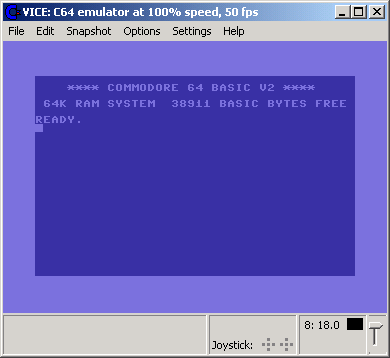
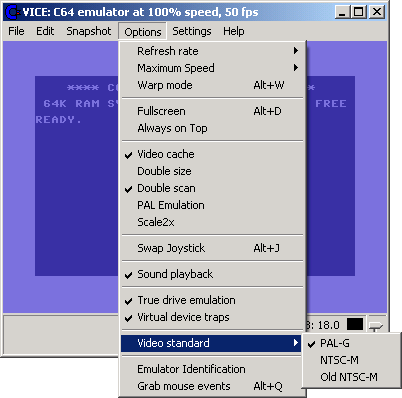
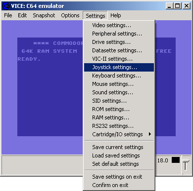
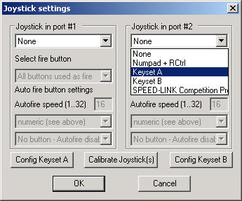
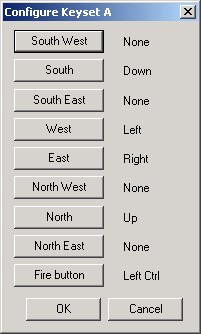
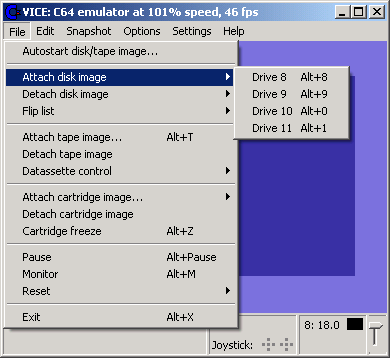
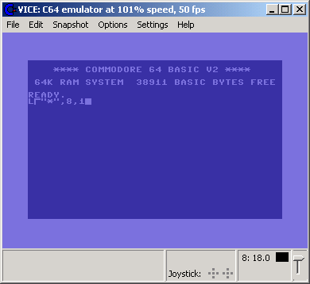
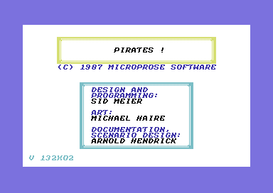

Main IndexWinVice Configuration
The following WinVice settings are recommended for running Microprose Pirates from the supplied G64 images. Figure #1 shows WinVice when just downloaded, installed (unpacked) and started.
Figure #1: WinVice start window.Important to enable is "True drive emulation". WinVice's "Video standard" must match your game's video standard (PAL or NTSC). Set "Refresh rate" to "Auto", "Maximum Speed" to "100%" and enable "Sound playback". I personally enable "Double size" for a bigger WinVice screen. During play you can speed up e.g. loading times by activating the "Warp mode" (Alt+W) for a short time. See the following Figure #2.

Figure #2: Options menu.You have to configure the keyboard/joystick before you can start playing. See following Figure #3 where to do this.

Figure #3: Select joystick settings.Pirates is played with a "joystick in port #2", but you can reroute the controls to your keyboard by choosing "Keyset A". Then click on "Config Keyset A" button to configure the keys as you like. If you have a "Speed-Link Competition Pro Joystick" with USB connector, you have to connect it before you start WinVice, then select it instead of choosing the keybord (WinVice supports up to 2 joysticks!). You can calibrate and test the joystick(s) in Windows 2000/XP: Start - Settings - Control Panel - Game Controllers.

Figure #4: Configure joystick settings.If you select your keyboard as input device, configure it as you like, but you must at least set "North", "South", "West", "East" and "Fire button". The following Figure #5 shows that I assigned my arrow keys and left control key.

Figure #5: Configure your keyboard keys for game control.If everything is ok you have to save your settings using "Settings - Save current settings" (see Figure #3). I personally disabled "Settings - Save settings on exit" and "Settings - Confirm on exit". Now it's time to attach a disk image to WinVice (as you would insert a disk into your 1541 drive): Attach the Pirates G64 image of side 1 to "Drive 8". When the game asks for a disk change simply attach a different G64 image here to "Drive 8" (see following Figure #6).

Figure #6: Attach a disk image.Finally run the game (following Figure #7).

Figure #7: Run the game.The following Figure #8 shows the title copyright screen of Pirates with the game version number in the lower left corner ("132x02").

Figure #8: Pirates game version number in lower left corner.